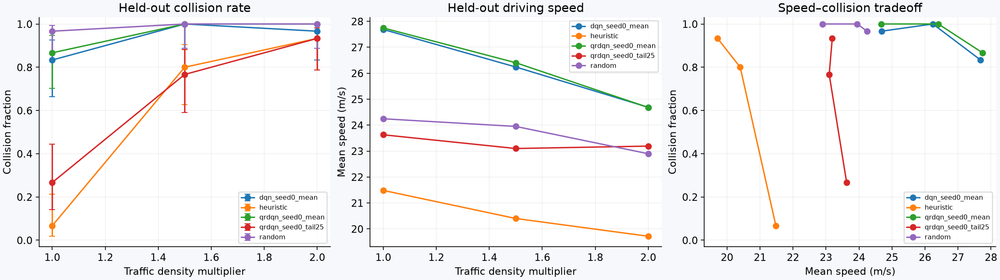
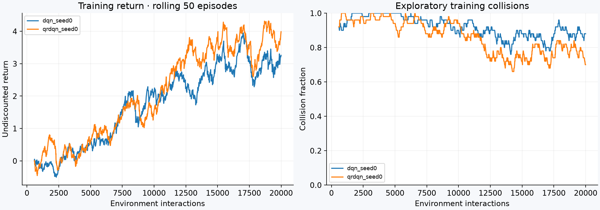
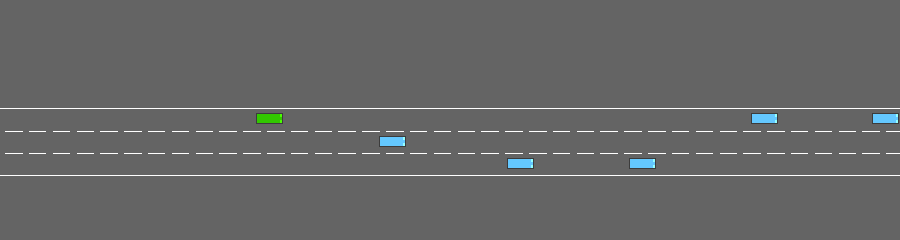

DEEP REINFORCEMENT LEARNING / initial experiment LAB
How much speed should an agent trade for fewer crashes?
A controlled comparison of DQN, distributional QR-DQN, and lower-tail action selection in simulated highway traffic.
Preliminary experiments. Individual training seeds and finite evaluation samples do not establish a reliable improvement. Lower-tail selection is a deployment heuristic; its return predictions were trained for mean-greedy control. The heuristic comparator uses privileged simulator state. All policies operate in a simplified simulator.
Held-out evaluation

Learning dynamics
These training curves include exploratory actions; assess deployed policies using the held-out evaluation above.

Rollout replays
Each replay uses the first evaluation seed, selected before seeing outcomes.
dqn_seed0_mean

heuristic
qrdqn_seed0_mean

qrdqn_seed0_tail25

random